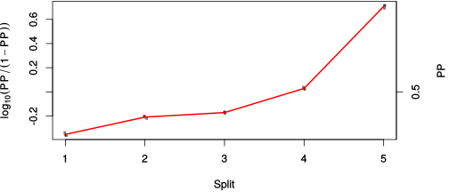

| chain # | burnin | subsample | Iterations (remaining) | command line | subdirectory | directory |
|---|---|---|---|---|---|---|
| 1 | 10000 | 1 | 90000 | bali-phy E7_AA_red3_v2_Lambda.fas -s 65231 -n Lambda_c1 | Lambda_c1-1 | /home/willemse/data/trees/BAli-Phy/red3_v2/E7 |
| 2 | 10000 | 1 | 90000 | bali-phy E7_AA_red3_v2_Lambda.fas -s 84613 -n Lambda_c2 | Lambda_c2-1 | /home/willemse/data/trees/BAli-Phy/red3_v2/E7 |
| 3 | 10000 | 1 | 90000 | bali-phy E7_AA_red3_v2_Lambda.fas -s 49763 -n Lambda_c3 | Lambda_c3-1 | /home/willemse/data/trees/BAli-Phy/red3_v2/E7 |
| P(data|M) = -1244.261 +- 0.136 | Complete sample: 33 topologies | 95% Bayesian credible interval: 12 topologies |
Phylogeny Distribution

| Partition support: Summary |
| Partition support graph: SVG |
{kind=link}
| 50% consensus | Newick (+PP) | SVG | |||||
| 66% consensus | Newick (+PP) | SVG | |||||
| 80% consensus | Newick (+PP) | SVG | |||||
| 90% consensus | Newick (+PP) | SVG | |||||
| 95% consensus | Newick (+PP) | SVG | |||||
| 99% consensus | Newick (+PP) | SVG | |||||
| 100% consensus | Newick (+PP) | SVG | |||||
| MAP | Newick (+PP) | SVG | |||||
| greedy | Newick (+PP) | SVG |
{kind=link}
{kind=link}
{kind=link}
{kind=link}
{kind=link}
{kind=link}
{kind=link}
{kind=link}
Alignment Distribution
Partition 1
| Diff | Min. %identity | # Sites | Constant | Informative | ||||
|---|---|---|---|---|---|---|---|---|
| Initial | FASTA | HTML | Diff | 5.21% | 99 | 1 (1.01%) | 27 (27.3%) | |
| Best (WPD) | FASTA | HTML | AU | 11.1% | 133 | 7 (5.26%) | 37 (27.8%) |
Mixing
{kind=link}
{kind=link}
| burnin (scalar) | ESS (scalar) | ESS (partition) | ASDSF | MSDSF | PSRF-CI80% | PSRF-RCF |
|---|---|---|---|---|---|---|
| 788 | 2.022e+04 | 9283.676 | 0.005 | 0.007 | 1 | 1.008 |
Projection of RF distances for the first 3 chains3D | Variation of split PPs across chains  |
Scalar variables
| Statistic | Median | 95% BCI | ACT | ESS | burnin | PSRF-CI80% | PSRF-RCF |
|---|---|---|---|---|---|---|---|
| prior | -163.7 | (-206.6, -127.7) | 12.39 | 21789 | 542 | 1 | 1.004 |
| prior_A1 | -144.2 | (-186, -111.2) | 6.369 | 42394 | 211 | 0.9998 | 1.002 |
| likelihood | -1231 | (-1246, -1215) | 5.579 | 48396 | 235 | 1 | 0.9979 |
| logp | -1395 | (-1436, -1361) | 12.69 | 21283 | 292 | 1 | 1.002 |
| Heat.beta | 1 | ||||||
| Scale1 | 3.76 | (1.586, 7.137) | 1.079 | 250123 | 61 | 0.9996 | 0.9997 |
| S1.F.pi.A | 0.05876 | (0.03707, 0.08231) | 8.077 | 33428 | 255 | 0.9998 | 1.003 |
| S1.F.pi.R | 0.07166 | (0.04638, 0.1006) | 7.725 | 34950 | 219 | 1 | 0.9999 |
| S1.F.pi.N | 0.03007 | (0.0154, 0.04831) | 8.028 | 33632 | 470 | 1 | 0.9999 |
| S1.F.pi.D | 0.06117 | (0.03851, 0.08603) | 7.901 | 34171 | 310 | 0.9998 | 0.9917 |
| S1.F.pi.C | 0.04702 | (0.02396, 0.07412) | 7.795 | 34639 | 391 | 0.9996 | 0.9901 |
| S1.F.pi.Q | 0.05295 | (0.03334, 0.07487) | 7.924 | 34076 | 345 | 1 | 1.001 |
| S1.F.pi.E | 0.0686 | (0.04391, 0.09648) | 9.254 | 29176 | 479 | 1 | 0.9996 |
| S1.F.pi.G | 0.06723 | (0.03912, 0.09921) | 8.421 | 32061 | 788 | 1 | 0.9999 |
| S1.F.pi.H | 0.02615 | (0.01147, 0.04351) | 7.745 | 34859 | 334 | 0.9999 | 0.9928 |
| S1.F.pi.I | 0.05559 | (0.03522, 0.07959) | 8.374 | 32244 | 392 | 0.9996 | 0.999 |
| S1.F.pi.L | 0.1075 | (0.07561, 0.1424) | 7.945 | 33985 | 521 | 0.9998 | 1.006 |
| S1.F.pi.K | 0.0299 | (0.01517, 0.04694) | 8.234 | 32789 | 253 | 1 | 1.008 |
| S1.F.pi.M | 0.006154 | (0.0007312, 0.01459) | 10.02 | 26959 | 303 | 0.9999 | 1.002 |
| S1.F.pi.F | 0.02924 | (0.01299, 0.04918) | 8.574 | 31491 | 396 | 0.9998 | 1.003 |
| S1.F.pi.P | 0.04665 | (0.02489, 0.07318) | 8.624 | 31306 | 430 | 1 | 1.002 |
| S1.F.pi.S | 0.06192 | (0.03978, 0.08676) | 7.694 | 35092 | 396 | 1 | 0.9973 |
| S1.F.pi.T | 0.05443 | (0.0332, 0.07912) | 7.735 | 34906 | 316 | 0.9999 | 1.002 |
| S1.F.pi.W | 0.002297 | (5.426e-08, 0.009982) | 13.35 | 20219 | 570 | 0.9995 | 0.9981 |
| S1.F.pi.Y | 0.0228 | (0.009076, 0.04029) | 8.13 | 33210 | 654 | 0.9998 | 0.9955 |
| S1.F.pi.V | 0.08344 | (0.05724, 0.1116) | 7.778 | 34712 | 295 | 1 | 0.9996 |
| I1.RS07.meanIndelLengthMinus1 | 1.101 | (0.3429, 2.281) | 6.247 | 43222 | 223 | 0.9999 | 0.9996 |
| I1.RS07.logLambda | -3.681 | (-4.242, -3.074) | 3.554 | 75978 | 154 | 1 | 0.9999 |
| |A1| | 116 | (108, 128) | 11.34 | 23803 | 256 | 0.9231 | 1.002 |
| #indels1 | 22 | (15, 31) | 6.116 | 44144 | 164 | 0.9091 | 1.001 |
| |indels1| | 48 | (32, 71) | 6.252 | 43189 | 142 | 0.9615 | 1.003 |
| #substs1 | 223 | (211, 233) | 9.49 | 28450 | 118 | 0.9333 | 1.002 |
| Scale1*|T| | 4.76 | (3.813, 5.859) | 4.158 | 64935 | 164 | 0.9999 | 0.9988 |
| |A| | 116 | (108, 128) | 11.34 | 23803 | 256 | 0.9231 | 1.002 |
| #indels | 22 | (15, 31) | 6.116 | 44144 | 164 | 0.9091 | 1.001 |
| |indels| | 48 | (32, 71) | 6.252 | 43189 | 142 | 0.9615 | 1.003 |
| #substs | 223 | (211, 233) | 9.49 | 28450 | 118 | 0.9333 | 1.002 |
| |T| | 1.272 | (0.5093, 2.273) | 1 | 270003 | 68 | 1 | 1.001 |